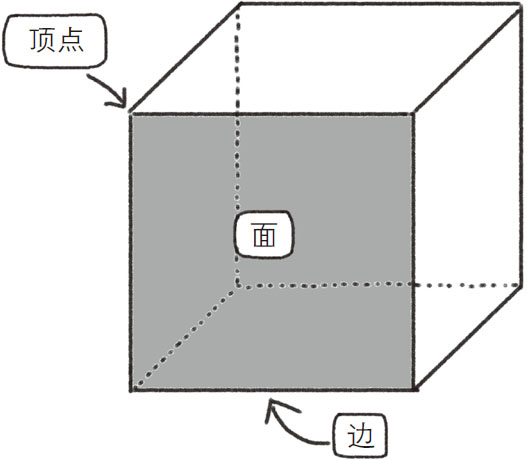
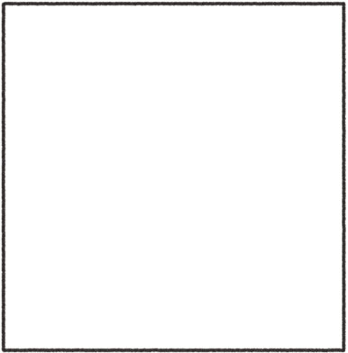
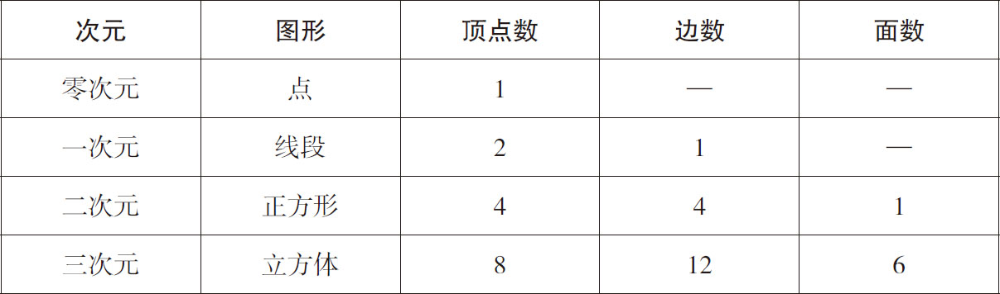
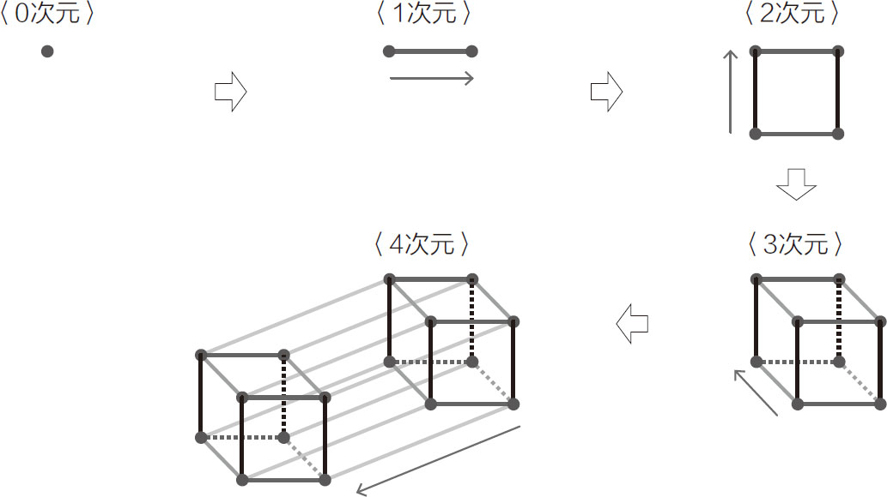
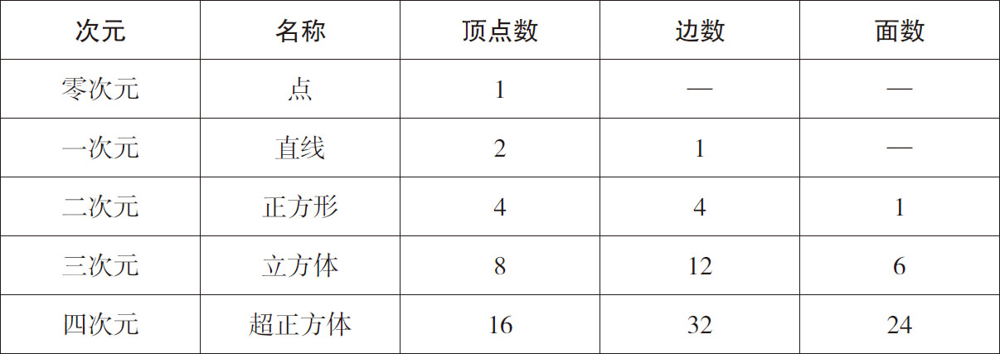
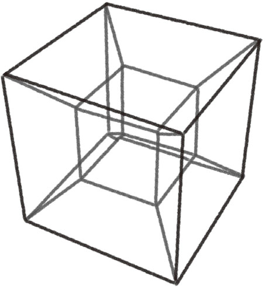
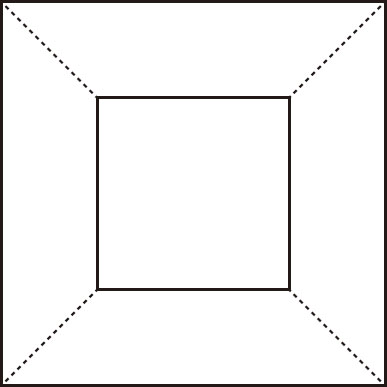

提起四次元，你可能会觉得难以理解。虽然很多人通过漫画和科幻小说知道了这一概念，比如《哆啦A梦》中的四次元口袋，但大多数人并不明白四次元的真正含义。
“次元”这个词会给人一种专业且复杂的印象，其实这个词本身的意思并不难理解，它表示的是“有几个运动方向 ”。
我们生存的世界属于“三次元”世界，因为可以运动的方向只有“左右”“前后”和“上下”三组 。当然，我们也可以向右前方运动，这时可以理解为向右和向前运动的组合。爬楼梯这个动作就可以理解为向前和向上运动的组合。如此看来，在我们生活的三次元世界中，物体的所有运动方向都可以看作“左右”“前后”“上下”这三种方向的组合。
如果物体的运动方向只有一个，那就属于“一次元”。一次元世界是一条直线，所有物体都只能在这条直线上运动。依此类推，在“二次元世界”中，物体的运动没有“上下”，只有“左右”和“前后”两组运动方向，可以将二次元世界想象为一张纸上的世界。如果每个物体只能停在当前所处的位置，不能向任何方向运动，这样的世界叫什么呢？答案是“零次元世界”。我们可以在概念上这样定义它。
根据前面对次元的定义，四次元世界就是有四组运动方向的世界 。也就是说，除了“左右”“前后”“上下”方向外，还有一组方向 。虽然我们不能确定四次元这个奇妙的世界是否真实存在，但在大学以上水平的数学课程中，都将四次元世界作为一个绝对存在的世界进行研究。不仅如此，五次元世界、六次元世界，甚至n 次元（n ≥0）世界都可能存在。这里的n 是英文“数字”（number）一词的首字母，只要n取自然数，无论多大的数字都可以代入。数学上认为，即使是一万次元、无穷次元也是成立的。
次元这个概念的确比较复杂。不过，有一本关于次元的小说十分著名，内容简单易懂且十分有趣，推荐给大家。这就是19世纪的埃德温·A.艾勃特写的《平面国》（Flatland ），书中大致内容是：在二次元的平面王国中，住着三角形、四边形、五边形等居民，他们所处的阶层是由他们的形状决定的。四边形的阶层高于三角形，五边形的阶层高于四边形，角的数量越多代表他的社会阶层越高。而所有居民中，阶层最高的是圆形，因为一个图形的角越多，其形状就越接近圆形，可以把圆形理解为拥有无穷个角的图形。
有一天，小说中的主人公四边形遇到了来自三次元世界（空间王国）中的球。四边形不知道他是异世界的来访者，将他当成本世界中的最高阶层圆形了。无论球怎么讲述三次元世界中发生的事情，四边形都无法理解。尽管球对四边形解释说：“在三次元世界中，除了前后、左右两组方向外，还有上下这组方向。”但是四边形还是会问：“什么是‘上’，什么是‘下’？如果真有这组方向，那么你就给我一一指出来！”这时球真的被难住了，无言以对。因为即使球能够指出上、下两个方向，生活在二次元世界中的四边形也是不能理解的。
如同二次元世界中的居民不能理解三次元世界，生活在三次元世界的我们也无法想象四次元世界的样子。那么，人类真的对四次元世界一筹莫展、乖乖认输了吗？事实上，数学家们已经解决了很多关于四次元世界中的形的问题。
究竟该如何来理解四次元世界中的形呢？我们目前能想象到的次元世界有零次元（点）世界、一次元（直线）世界、二次元（平面）世界和三次元（立体）世界。如果能弄清楚这几个次元世界中的形的性质，或许能从中获得一些启发。
我们首先看一下三次元世界中的立方体，如图1-20所示。立方体有8个顶点、12条边和6个面。

图1-20 立方体
然后我们看一下二次元的图形，也就是与立方体对应的正方形，如图1-21所示。正方形有4个顶点、4条边和1个面。

图1-21 正方形
接下来我们看一下一次元的图形，也就是线段，如图1-22所示。线段的左右两端各有一个顶点，共2个顶点、1条边，没有面。
图1-22 线段
最后我们来看一下零次元的图形，也就是一个点，它本身就是一个顶点，没有边和面。
我们将上述结论进行汇总，如表1-1所示。
表1-1 各次元图形的顶点、边、面的数量

仔细观察表1-1中的数据，是不是可以看出某些规律？例如，对于顶点数来说，随着次元数量的增长，对应图形的顶点数依次为1、2、4、8。也就是每加一个次元，对应图形的顶点数是上个次元对应图形顶点数的2倍 。如果我们将立方体拓展到四次元世界中，把形成的图形命名为“超正方体 ”，那么这个超正方体的顶点数就应该是8×2＝16个。
为什么不同次元相对应的图形的顶点数会呈现2倍关系呢？我们做一个从点到线段、从线段到正方形、从正方形到立方体的游戏就能理解了，如图1-23所示。如果要让点变为线段，就必须将它水平移动到一个新的位置上得到一个新点，再用线将二者连接起来。

图1.23 加图形、升次元的过程
（第四个方向无法在纸上呈现，在此表示为斜下方向）
如果要让线段变为正方形，就必须将线段纵向移动到一个新的位置，再用线将二者对应位置的顶点连接起来。同理，如果要让正方形变为立方体，就必须将正方形垂直向上（与纸面垂直的方向）移动到一个新的位置，再用线将二者对应位置的顶点连接起来。
综上所述，要得到下个次元的图形，可以将原图形在一个新的方向上移动，再把二者对应位置的顶点用线连接 。所以，顶点数是原图形的顶点数加上移动后的图形的顶点数，也就是原图形顶点数的2倍。
类似地，新图形的边数应该是原图形边数的2倍再加上原图形的顶点数。首先，将原图形移动到新的位置后，相当于复制了之前的图形，所以边数变为原图形的2倍；其次，原图形与移动后的图形对应位置的顶点是以线相连的，所以连接的线条数与原图形的顶点数一致。
对于面，也可以做同样的推理。复制了原图形，面的数量自然为原图形的2倍，再加上新增的面是由顶点与顶点连线得到的，所以原图形的边数就等于新增的面数。也就是说，新图形的面数是原图形面数的2倍加上原图形的边数。
综上所述，图形的顶点、边、面的数量可用以下公式计算：
1．顶点数＝上一个次元对应图形的顶点数×2。
2．边数＝上一个次元对应图形的边数×2＋上一个次元对应图形的顶点数。
3．面数＝上一个次元对应图形的面数×2＋上一个次元对应图形的边数。
在表1-1中加入四次元对应图形的顶点、边、面的数量后，可以得到表1-2所示的结果。
表1-2 加上四次元图形后，各次元图形顶点、边、面的数量

从表1-2中可以看出，四次元世界中的超正方体顶点数为16，边数为32，面数为24。虽然我们无法在脑海中构造出超正方体的样子，但是通过对零次元到三次元世界中的图形的分析，还是得到了四次元世界中的图形的性质。这种由已知条件推导出一般规律的方法在数学上被称为“归纳” 。
如果想知道五次元和六次元世界中图形的性质，也可以根据上述规律算出对应图形的顶点数、边数和面数。可见，一旦发现了规律，很多问题都迎刃而解了。
我们虽然已经知道了四次元世界中图形的顶点数、边数和面数，但仍然无法想象这类图形的样子，接下来我们就具体介绍一下四次元世界中的图形。如同《平面国》的主人公四边形把球误认为圆，生活在三次元世界中的我们也无法直观地看到四次元世界中的图形。但我们知道，四次元世界中的图形，其横截面一定是三次元的 ，所以我们至少可以看看它的横截面的样子。只需要想象一下光线照射在四次元超正方体上形成的投影就可以了 ，它的横截面如图1-24所示。

图1-24 四次元超正方体的横截面
这个图形很像在一个大立方体中嵌入一个小立方体。为什么会形成这样的图形呢？我们可以试着将三次元世界的图形作为参考，进行类比。想象一下，先用一根笔直的铁丝围成一个立方体，然后在这个立方体的下面铺一张白纸，用一束灯光从立方体的正上方往下照，白纸上会出现什么样的投影呢？答案是：出现的投影是一个中间有一个小正方形的大正方形，并且立方体靠近灯光那个面的投影是大正方形，远离灯光那个面的投影是小正方形，如图1-25所示。

图1-25 立方体的投影
既然立方体的投影是中间有一个小正方形的大正方形，那么超正方体的投影就应该是一个中间有一个小立方体的大立方体，事实也的确如此。
和立方体同理，让我们思考一下，当灯光从四次元超正方体的“上方”照射下来时，在纸上形成的投影的样子。这里的“上方”是指四次元世界中的上方。我们将看到的是三次元的投影，并且靠近灯光的一侧是大立方体，远离灯光的一侧是小立方体，也就是图1-24所示的样子。
从本节讲到的两个示例来看，只要在思考问题的时候带着逻辑思维，哪怕是超现实世界，我们也能对其进行一定程度的探索。自然科学之所以能解答宇宙诞生、生命起源这些无法想象的谜题，都是因为借助了理论的力量。
(1) 六方晶系的形成原理非常复杂，涉及晶体表层的水分子稳定性，此处不做赘述。